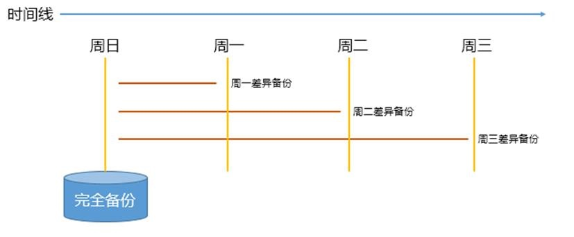
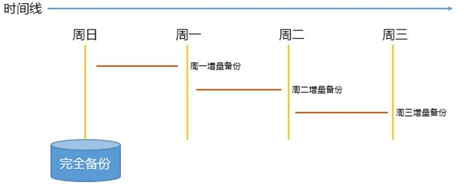
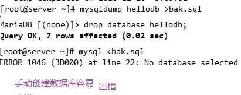
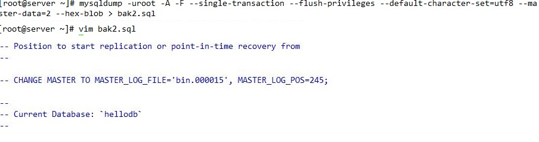

注意备份后，需要还原测试
备份类型：
完全备份，备份整个数据集
部分备份，只备份数据子集，如部分库或表
差异备份 仅备份最近一次完全备份以来变化的数据， 备份较慢，还原简单

增量备份，：仅备份最近一次完全备份或增量备份（如果存在增量）以来变化的数据,备份较快，还原复杂

注意：二进制日志文件不应该与数据文件放在同一磁盘
冷、温、热备份
冷备：读写操作均不可进行
1.停止数据库服务
2.拷贝数据文件、二进制日志等重要数据
scp -pr /data/mysql sys2:/data/mysql
scp -pr /data/log sys2:/data/log
3.检查文件夹权限
chown -R mysql.mysql /var/lib/mysql
4.启动mysql
温备：读操作可执行；但写操作不可执行
热备：读写操作均可执行
MyISAM：温备，不支持热备
InnoDB：都支持
物理和逻辑备份
物理备份：直接复制数据文件进行备份，与存储引擎有关，占用较多的空间， 速度快
逻辑备份：从数据库中“导出”数据另存而进行的备份，与存储引擎无关，占用空间少，速度慢,可能丢失精度
备份时需要考虑的因素
温备的持锁多久
备份产生的负载
备份过程的时长
恢复过程的时长
备份内容
数据
二进制日志、InnoDB的事务日志 程序代码（存储过程、函数、触发器、事件调度器）
服务器的配置文件
备份工具
cp, tar等复制归档工具：物理备份工具，适用所有存储引擎；只支持冷备；完全和部分备份
LVM的快照：先加锁，做快照后解锁，几乎热备；借助文件系统工具进行备份
mysqldump：逻辑备份工具，适用所有存储引擎，温备；支持完全或部分备份；对InnoDB存储引擎支持热备，结合binlog的增量备份
xtrabackup：由Percona提供支持对InnoDB做热备(物理备份)的工具，支持完全备份、增量备份 MariaDB Backup：从MariaDB 10.1.26开始集成，基于Percona XtraBackup 2.3.8实现
mysqlbackup：热备份， MySQL Enterprise Edition组件
mysqlhotcopy：PERL 语言实现，几乎冷备，仅适用于MyISAM存储引擎，使用LOCK TABLES、FLUSH TABLES和cp或scp来快速备份数据库
LVM快照，先加锁，做快照后解锁，几乎热备
1. 数据库文件，二进制日志文件需在lvm卷中
2. 加锁
FLUSH TABLES WITH READ LOCK;
3. 记录二进制日志文件及位置
FLUSH LOGS;
SHOW MASTER STATUS;
mysql -e 'SHOW MASTER STATUS' > /PATH
4. 创建快照
lvcreate -L SIZE -s -p -r -n NAME /DEV/VG_NAME/LV_NAME
例：
lvcreate -L 200M -s -p r -n mysql_snap /dev/centos/mysql
5. 释放锁
UNLOCK TABLES
6. 挂载快照卷，执行数据备份
mount -o nouuid norecovery /DEV/VG_NAME/LV_SNATSHOT /MOUNTPIONT
tar jcf mysqlbackup.tar.gz MOUNTPIONT/
7. 删除快照卷
lvremove /DEV/VG_NAME/LV_SHATSHOT
8. 通过原卷备份二进制日志
set sql_log_bin=off
cat /PATH 查看记录点
mysqlbinlog LOG_BIN_FILE --start-position=POSITION > increment.sql
逻辑备份工具：mysqldump, mydumper, phpMyAdmin
[mysqldump参考]https://dev.mysql.com/doc/refman/5.7/en/mysqldump.html
mysqldump 客户端命令，通过mysql协议连接至mysql服务器进行备份
mysqldump [options] database [tables]
mysqldump [options] -B DB1 [DB2 DB2]...
mysqldump [options] -A [OPTIONS]
[options]
-A，--all-databases 备份所有数据库，及存储过程和自定义函数
-B，--databases 备份指定的数据库，不含存储过程和自定义函数
-E，--events 备份相关所有的event scheduler
-R, --routines：备份所有存储过程和自定义函数
--triggers：备份表相关触发器，默认启用,用--skip-triggers，不备份触发器
--default-character-set=utf8，指定备份的字符集
备份前查看数据库字符集，mysqldump --help defaults-prints查看mysqdump默认字符集
--master-data[=#]，需要启用二进制日志
1：适用于主从复制，告诉从库从哪个位置开始同步，所备份的数据之前加一条记录为CHANGE MASTER TO语句，非注释，不指定#，默认为1
2：记录为注释的CHANGE MASTER TO语句，只是单纯记录二进制文件位置
此选项会自动关闭--lock-tables功能，自动打开-x |--lock-all-tables功能（除 非开启--single-transaction）
-F, --flush-logs：备份前滚动日志，锁定表完成后，执行flush logs命令,生成新的 二进制日志文件，配合-A 或 -B选项时，会导致刷新多次数据库。建议在同一时刻执行转储和日志刷新，可通过和--single-transaction或-x，--master-data一起使用实现，此时只刷新一次日志
--compact 去掉注释，适合调试，生产不使用
-d, --no-data 只备份表结构
-t, --no-create-info 只备份数据,不备份create table
-n,--no-create-db 不备份create database，可被-A或-B覆盖
--flush-privileges 备份mysql或相关时需要使用
-f, --force 忽略SQL错误，继续执行
--hex-blob 使用十六进制符号转储二进制列，当有包括BINARY，VARBINARY，BLOB，BIT的数据类型的列时使用，避免乱码
-q, --quick 不缓存查询，直接输出，加快备份速度
示例：
mysqldump hellodb >bak.sql 此条语法不会备份数据库结构

mysqldump -B hellodb > bak.sql
mysqldump -A > all_bak.sql
mysqldump -uroot --single-transaction --database hellodb > bak4.sql
mysqldump -A --master-data=1 > bak3.sql
{kind=link}
MyISAM备份选项：
支持温备；不支持热备，所以必须先锁定要备份的库，而后启动备份操作
锁定方法如下：
-x,--lock-all-tables：加全局读锁，锁定所有库的所有表，同时加--single-transaction或--lock-tables选项会关闭此选项功能 注意：数据量大时，可能会导致长时间无法并发访问数据库 -l,--lock-tables：对于需要备份的每个数据库，在启动备份之前分别锁定其所有表，默认为on,--skip-lock-tables选项可禁用,对备份MyISAM的多个库,可能 会造成数据不一致
注：以上选项对InnoDB表一样生效，实现温备，但不推荐使用
建议备份策略
mysqldump -uroot -A -F -x --master-data=1 --default-character-set=utf8 --hex-blob >PATH
InnoDB备份选项： 支持热备，可用温备但不建议用
--single-transaction 此选项Innodb中推荐使用，不适用MyISAM，此选项会开始备份前，先执 行START TRANSACTION指令开启事务
此选项通过在单个事务中转储所有表来创建一致的快照。仅适用于存储在支持多版本控制的存储引擎中的表（目前只有InnoDB可以）; 转储不保证与其他存储引擎保持一致。在进行单事务转储时，要确保有效的转储文件（正确的表内容和二进制日志位置），没有其他连接应该使用以下语句：ALTER TABLE， DROP TABLE，RENAME TABLE，TRUNCATE TABLE
此选项和--lock-tables（此选项隐含提交挂起的事务）选项是相互排斥备份大型表时,建议将--single-transaction选项和--quick结合一起使用
建议备份策略
mysqldump -uroot -A -F --single-transaction --flush-privileges --default-character-set=utf8 --master-data=2 --hex-blob >PATH

分库备份脚本
1 |
|
1 | mysql -e 'show databases' |grep -Ev '^(Database|information_schema|performance_schema)$'|sed -r 's/(.*)/mysqldump -B \1 |gzip > \/data\/\1.sql.gz/' |bash |
1 | mysqldump –uroot –A –F --single-transaction --master-data=2 --default-character-set=utf8 --hex-blob >$BACKUP/fullbak_$BACKUP_TIME.sql |
使用mysqdump备份恢复
1.使用策略禁止用户访问，防止用户读取或写入错误数据
2，恢复数据会产生大量的insert语句，没有必要记录到二进制日志中，需要关闭当前二进制日志记录
mysql > set sql_log_bin=off
使用完全备份进行恢复
mysql > source /root/bak5.sql
3. 新开终端查看备份的位置
cat /root/bak5.sql |less
--CHANGE MASTER TO MASTER_LOG_FILE='mysql-bin.000007', MASTER_LOG_POS=245;
cat /root/bak5.sql |less
5 在新终端，通过上个备份时间点，进行时间点恢复，备份时间点后的数据的二进制日志将其备份到文件，进行还原，
例如：备份文件为bak6.sql，某人误操作drop数据库，所以备份结束位置应该是drop语句的位置，不要将drop语句提取出来
6 返回旧终端
mysql>source bak6.sql
7.开启二进制
set sql_log_bin=on;
8 检查无误后，恢复用户访问